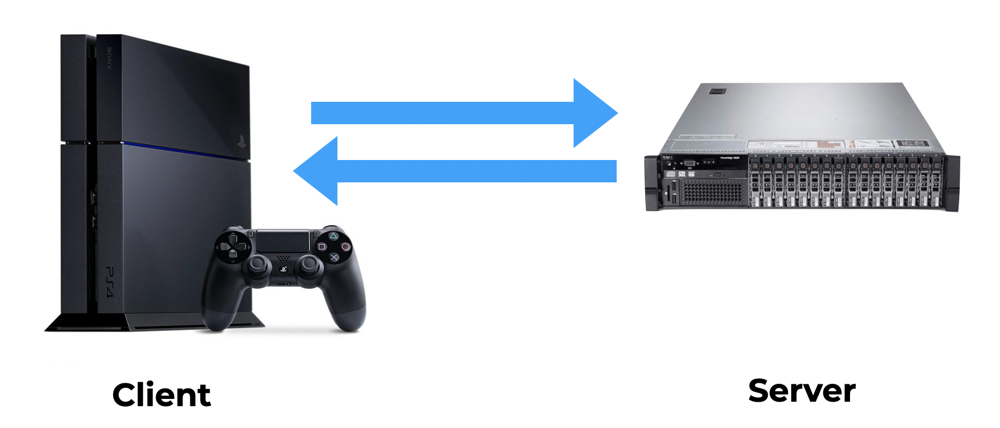

How it works¶
The SDK has two main components. next_client_t and next_server_t.
These components integrate with your game and replace how you send and receive packets between your game client and server:
You enable monitoring and acceleration for a player by upgrading that player’s session on your server.
The SDK then measures network performance between your client and server and communicates this up to the network next backend.
Every 10 seconds the SDK looks for a Network Next route with lower packet loss or latency than the public internet for your player.
When we find one, we steer that player’s traffic across our network of private networks, reducing the amount of latency and packet loss they experience while playing your game.
When the public internet is already good enough, or we can’t find a route that’s significantly better, the SDK keeps sending packets across the public internet.
If for any reason, the SDK cannot communicate with the Network Next backend, it falls back to sending packets across the public internet.
So no matter what happens, your players can always play your game.